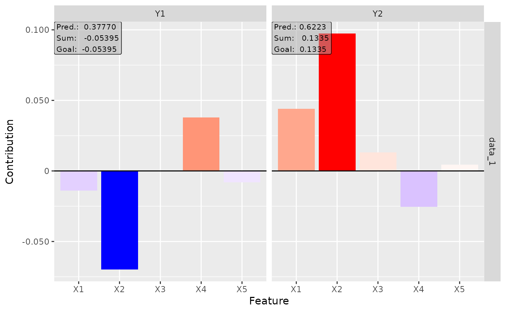
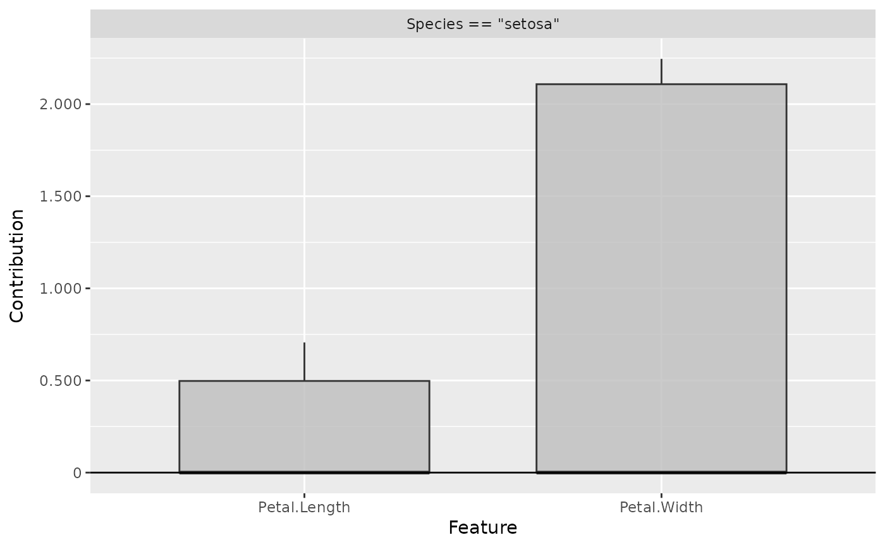

Deep Learning Important FeaTures (DeepLIFT) method
DeepLift.RdThis is an implementation of the Deep Learning Important FeaTures (DeepLIFT)
algorithm introduced by Shrikumar et al. (2017). It's a local method for
interpreting a single element \(x\) of the dataset concerning a reference value \(x'\)
and returns the contribution of each input feature from the difference of the
output (\(y=f(x)\)) and reference output (\(y'=f(x')\)) prediction.
The basic idea of this method is to decompose the difference-from-reference
prediction with respect to the input features, i.e.
$$\Delta y = y - y' = \sum_i C(x_i).$$
Compared to Layer-wise Relevance Propagation (see LRP) is the
DeepLIFT method exact and not an approximation, so we get real contributions
of the input features to the difference-from-reference prediction. There are
two ways to handle activation functions: Rescale-Rule and Reveal-Cancel-Rule.
DeepLift(analyzer, data, x_ref = NULL, rule_name = "rescale")
Arguments
| analyzer | An instance of the R6 class |
|---|---|
| data | Either a matrix or a data frame, where each row must describe an input to the network. |
| x_ref | The reference input vector for the interpretation. You can also
pass an index from the given data set |
| rule_name | Name of the applied rule to calculate the contributions. Use one
of |
Value
It returns an array of size (dim_in, dim_out, num_data) which contains the contribution scores for each input variable to the output predictions for each element in the given data.
References
A. Shrikumar et al. (2017) Learning important features through propagating activation differences. ICML 2017, p. 4844-4866
See also
Examples
library(neuralnet) # train a NN and create an analyzer nn <- neuralnet(Species ~ ., iris, linear.output = FALSE, hidden = c(10,6), act.fct = "tanh", rep = 1, threshold = 0.1 ) analyzer = Analyzer$new(nn) # calculate contributions for x_ref = 0 with rescale rule result <- DeepLift(analyzer, iris[,-5]) plot(result)# calculate contributions for x_ref first datapoint with 'revealcancel' rule result <- DeepLift(analyzer, iris[,-5], x_ref = 1, rule_name = "revealcancel") plot(result)# compare class 'setosa' with 'virginica' result <- DeepLift(analyzer, iris[iris$Species == "setosa",-5], x_ref = colMeans(iris[iris$Species == "virginica",-5]), rule_name = "revealcancel") plot(result)